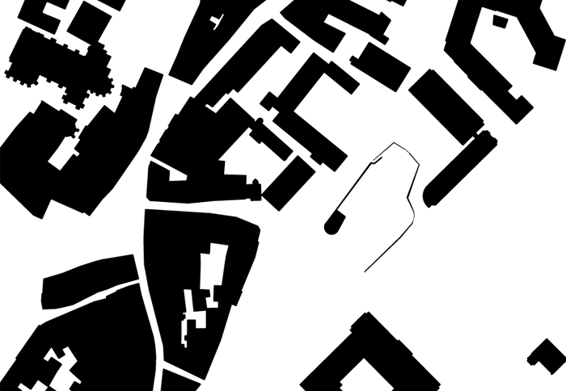
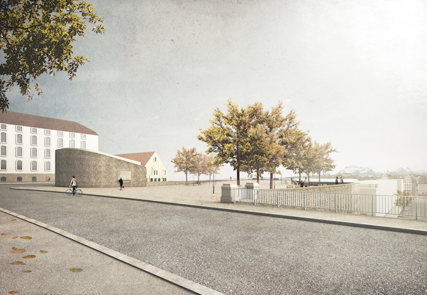
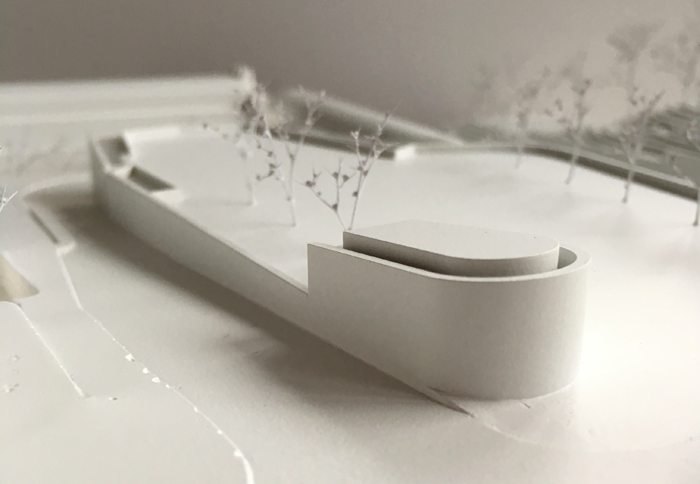
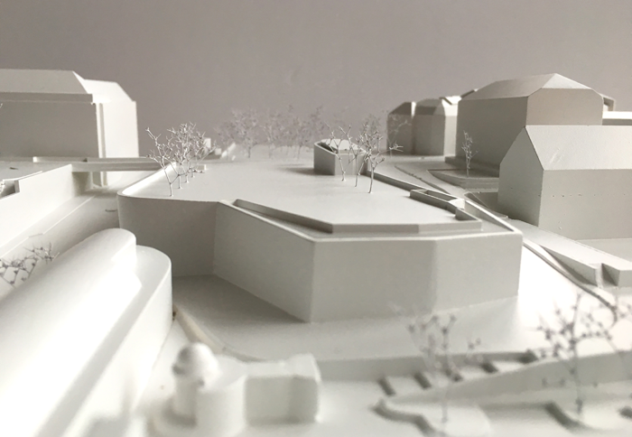
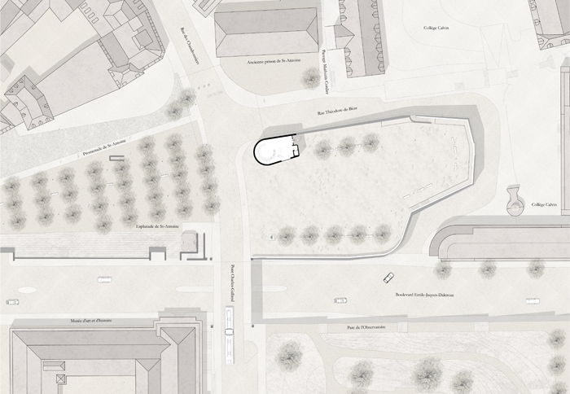
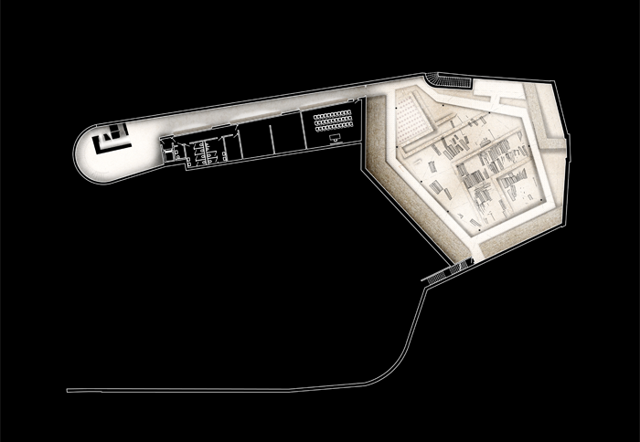
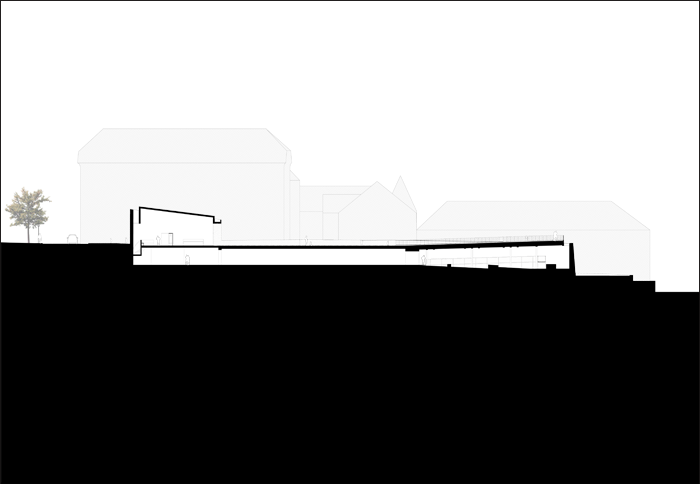
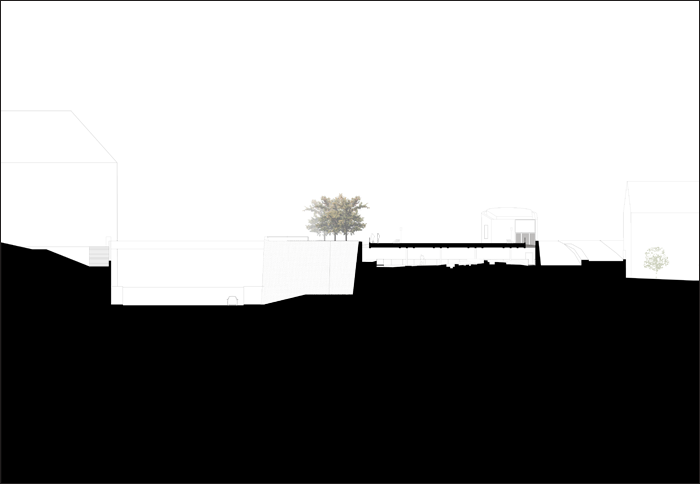
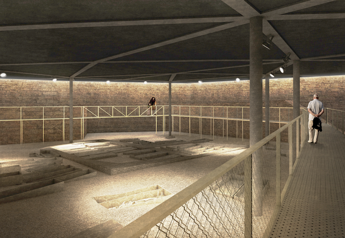
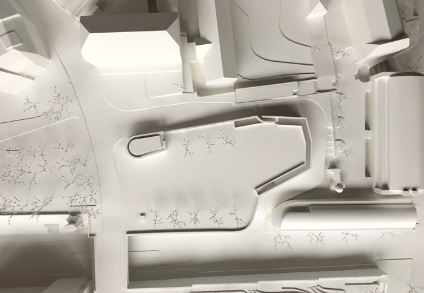

Projekt: BASTION ST-ANTOINE GENF, 5. Preis










Projekt: BASTION ST-ANTOINE GENF, 5. Preis
Ort: Genève (GE)
Bauherrschaft: Stadt Genf
Program: Aufwertung der archäologischen Stätte und Platzgestaltung
Gebäudekosten: 12’000’000 CHF
Datum: 2016
Typ: Offener Wettbewerb, 5. Preis
Team: NYX architectes, Westpol, Basel (Landschaftsarchitektur), Rapp Infra AG, Münchenstein (Bauingenieur)
Bilder: NYX architectes